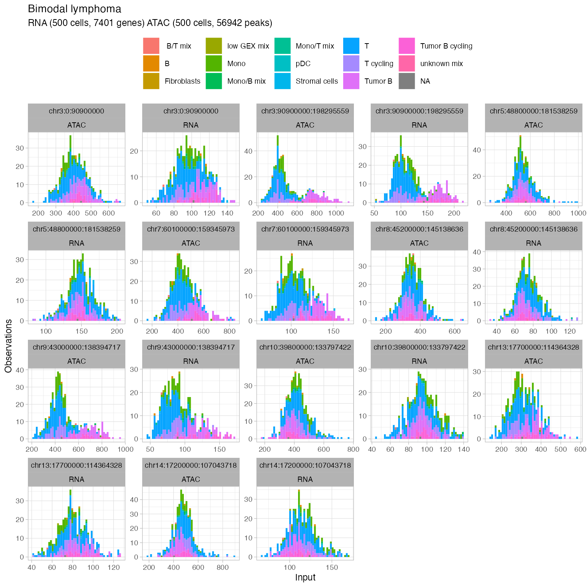
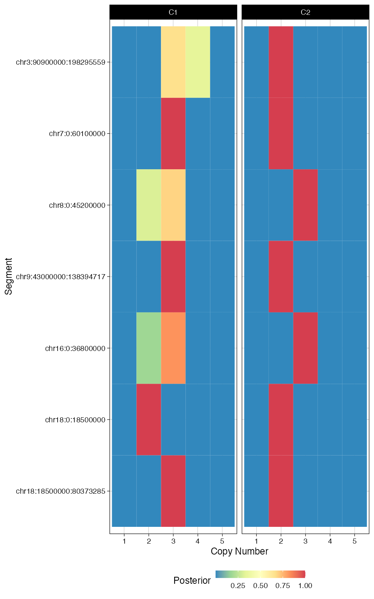
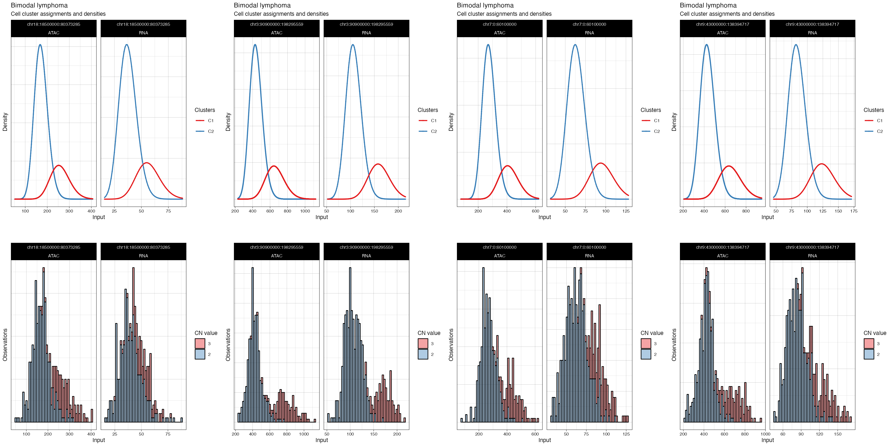

Setup the directory where results are stored.
sample = 'lymphoma'
prefix = paste0(sample, "/tutorial/")
out.dir = paste0(prefix, "/congas_data/")
fig.dir = paste0(prefix, "/congas_figures/")
if (!dir.exists(out.dir)) {dir.create(out.dir, recursive = T)}
if (!dir.exists(fig.dir)) {dir.create(fig.dir, recursive = T)}Load the ATAC counts to create the tibble needed as CONGAS+ input
With the multiome assay, the feature files provided by CellRanger contains already a mapping between gene names and coordinates. Let’s read this file As an alternative, when such file not not readily available, users can exploit BiomaRt.
data(features)In case the gene coordinates are not readily available, you can exploit Biomart:
library(biomaRt)
ensembl <- useEnsembl(biomart = "genes", dataset = "hsapiens_gene_ensembl")
#> Ensembl site unresponsive, trying uswest mirror
#> Ensembl site unresponsive, trying useast mirror
z <- getBM(c("hgnc_symbol", 'chromosome_name','start_position','end_position'),
filters = "hgnc_symbol",
rownames(rna_counts),
ensembl) %>%
dplyr::rename(gene = hgnc_symbol,
chr = chromosome_name,
from = start_position,
to = end_position) %>%
filter(chr %in% c(seq(1:22), 'X', 'Y')) %>%
mutate(chr = paste0('chr', chr))
z = z[!duplicated(z$gene),]
gene_names = rownames(rna_counts)
features = tibble(gene = gene_names) %>% left_join(z)
#> Joining with `by = join_by(gene)`Create the RNA and ATAC tibble required by CONGAS+ We first create for ATAC a dataframe with the paks coordinates
atac_featureDF = data.frame(id = rownames(atac_counts)) %>%
tidyr::separate(id, c('chr', 'from', 'to'), '-')
atac = Rcongas::create_congas_tibble(counts = atac_counts,
modality = 'ATAC',
save_dir = NULL,
features = atac_featureDF)
#> ℹ Saving temporary counts file
#> Rows: 3100055 Columns: 3
#> ── Column specification ────────────────────────────────────────────────────────
#> Delimiter: " "
#> dbl (3): 109788, 500, 3100055
#>
#> ℹ Use `spec()` to retrieve the full column specification for this data.
#> ℹ Specify the column types or set `show_col_types = FALSE` to quiet this message.
#> Joining with `by = join_by(feature_index)`
#> Joining with `by = join_by(cell_index)`
# duplicate call names across ATAC and RNA cells is not allowed by CONGAS+
# add suffix to atac cell barcodes prior to create the CONGAS+ object
atac = atac %>% mutate(cell = paste0(cell, '-ATAC'))
# Compute normalization factors
norm_atac = Rcongas:::auto_normalisation_factor(atac) %>%
mutate(modality = 'ATAC')
#> → Computing library size factors as total counts.
#> → Median digits per factor 4.5, scaling by 31622.7766016838.
#> Min. 1st Qu. Median Mean 3rd Qu. Max.
#> 0.0309 0.1610 0.3184 0.4383 0.5927 2.1472
rna = Rcongas::create_congas_tibble(counts = rna_counts,
modality = 'RNA',
save_dir=NULL,
features = features)
#> ℹ Saving temporary counts file
#> Rows: 1049590 Columns: 3── Column specification ────────────────────────────────────────────────────────
#> Delimiter: " "
#> dbl (3): 36601, 500, 1049590
#> ℹ Use `spec()` to retrieve the full column specification for this data.
#> ℹ Specify the column types or set `show_col_types = FALSE` to quiet this message.Joining with `by = join_by(feature_index)`Joining with `by = join_by(cell_index)`
rna = rna %>% mutate(cell = paste0(cell, '-RNA'))
# Compute normalization factors
norm_rna = Rcongas:::auto_normalisation_factor(rna) %>%
mutate(modality = 'RNA')
#> → Computing library size factors as total counts.
#> → Median digits per factor 4, scaling by 10000.
#> Min. 1st Qu. Median Mean 3rd Qu. Max.
#> 0.0627 0.1671 0.2724 0.3964 0.4966 2.4000
atac = atac %>% mutate(value = as.integer(value))
rna = rna %>% mutate(value = as.integer(value))Apply some basic filters on known genes
rna = rna %>% filter_known_genes(what='r')
#>
#> ── Ribosomal
#> ℹ n = 185 genes found.
#> RPL22, RPL11, RPS6KA1, RPS8, MRPL37, RPL5 , ...
#>
#> ── Specials
#> ℹ n = 1 genes found.
all_genes = rna$gene %>% unique
mito = all_genes %>% str_starts(pattern = 'MT-')
all_genes = setdiff(all_genes, all_genes[mito])
rna = rna %>% dplyr::filter(gene %in% all_genes)Read chromosome arm coordinated that will be used as segment breakpoints
data(example_segments)
# Remove these chromosomes
segments = example_segments %>% dplyr::filter(chr != 'chrX', chr != 'chrY')Now init the CONGAS+ object The init function has a paramter , which is a flag that either enables or disables the multiome mode. This mode makes the inference for the RNA and ATAC correspodning cells
x = init(
rna = rna,
atac = atac,
segmentation = segments, #%>% mutate(copies = as.integer(round(copies))),
rna_normalisation_factors = norm_rna,
atac_normalisation_factors = norm_atac,
rna_likelihood = "NB",
atac_likelihood = "NB",
description = paste0('Bimodal ', sample))
#> ┌──────────────────────────────────┐
#> │ │
#> │ (R)CONGAS+: Bimodal lymphoma │
#> │ │
#> └──────────────────────────────────┘
#>
#> ── RNA modality (36.094552 Mb)
#> → Input events: 975108
#> → Input cells: 500
#> → Input locations: 16602
#> → Cleaning outlier features from RNA input matrix
#> → Normalising RNA counts using input normalisation factors.
#> Warning: The `<scale>` argument of `guides()` cannot be `FALSE`. Use "none" instead as
#> of ggplot2 3.3.4.
#> ℹ The deprecated feature was likely used in the Rcongas package.
#> Please report the issue to the authors.
#> This warning is displayed once every 8 hours.
#> Call `lifecycle::last_lifecycle_warnings()` to see where this warning was
#> generated.
#> → Found: 84 outliers.
#> → Entries mapped: 465077, with 510031 outside input segments that will be discarded.
#> → Using likelihood: NB.
#>
#> ── ATAC modality (86.844704 Mb)
#> → Input events: 3100055
#> → Input cells: 500
#> → Input locations: 109645
#> → Cleaning outlier features from ATAC input matrix
#> Joining with `by = join_by(chr, from, to)`
#> → Normalising ATAC counts using input normalisation factors.
#> → Found: 581 outliers.
#> → Entries mapped: 1530455, with 1569600 outside input segments that will be
#> discarded.
#> → Using likelihood: NB.
#>
#> ── Checking segmentation
#> ! These segments have no events associated and will be removed - we suggest you to check if these can be further smoothed.
#> ℹ Hint Check if the reduced segments can be further smoothed!
#> # A tibble: 3 × 11
#> chr from to copies segment_id RNA_nonzerocells ATAC_nonzerocells
#> <chr> <int> <int> <int> <chr> <dbl> <dbl>
#> 1 chr13 0 17700000 2 chr13:0:177000… 0 0
#> 2 chr14 0 17200000 2 chr14:0:172000… 0 0
#> 3 chr15 0 19000000 2 chr15:0:190000… 0 0
#> # ℹ 4 more variables: ATAC_nonzerovals <dbl>, ATAC_peaks <dbl>,
#> # RNA_nonzerovals <dbl>, RNA_genes <dbl>
#> ✖ Warning RNA 0-counts cells. 491 cells have missing data in any of 23 segments, top 5 with missing data are:
#> ✖ Cell AAACCGAAGTGGACAA-1-RNA with 1 0-segments (4%)
#> ✖ Cell AAACGCGCAGGTTCAC-1-RNA with 1 0-segments (4%)
#> ✖ Cell AAACGTACATAATGAG-1-RNA with 1 0-segments (4%)
#> ✖ Cell AAAGCCGCATAGTCAT-1-RNA with 1 0-segments (4%)
#> ✖ Cell AAAGGTTAGGCCAATT-1-RNA with 1 0-segments (4%)
#> ✖ Warning ATAC 0-counts cells. 209 cells have no data in any of 23 segments, top 5 with missing data are:
#> ✖ Cell GTCCTAGAGCCAAATC-1-ATAC with 2 0-segments (9%)
#> ✖ Cell TCTCGCCCAAACATAG-1-ATAC with 2 0-segments (9%)
#> ✖ Cell AAACGCGCAGGTTCAC-1-ATAC with 1 0-segments (4%)
#> ✖ Cell AAACGTACATAATGAG-1-ATAC with 1 0-segments (4%)
#> ✖ Cell AAAGCCGCATAGTCAT-1-ATAC with 1 0-segments (4%)Now plot the number of nonzero cells vs the number of peaks per segment, to help identify a threshold for filtering segments.
ggplot(x$input$segmentation, aes(x=ATAC_nonzerocells, y=ATAC_peaks)) + geom_point() + theme_bw()
ggplot(x$input$segmentation, aes(x=RNA_nonzerocells, y=RNA_genes)) + geom_point() + theme_bw()
x = Rcongas::filter_segments(x, RNA_nonzerocells = 300, ATAC_nonzerocells = 300)
#>
#> ── Segments filter
#> → 22 retained segments out of 23.Generate plots to check out the data distribution
plot_data(
x,
what = 'histogram',
segments = get_input(x, what = 'segmentation') %>%
ungroup() %>%
mutate(L = to - from) %>%
dplyr::arrange(dplyr::desc(L)) %>%
dplyr::top_n(9) %>%
pull(segment_id)
)
#> → Normalising RNA counts using input normalisation factors.
#> → Normalising ATAC counts using input normalisation factors.
#> Selecting by L
#> → Showing all segments (this plot can be large).Add metadata to annotate the counts distributions
data(metadata)
x$input$metadata = metadata
# Modificato plot_data in mdodo da plottare gli istogrammi colorati per celltype
plot_data(x,
to_plot = 'type',
position = 'stack',
segments = get_input(x, what = 'segmentation') %>%
ungroup() %>%
mutate(L = to - from) %>%
dplyr::arrange(dplyr::desc(L)) %>%
dplyr::top_n(9) %>%
pull(segment_id))
#> → Normalising RNA counts using input normalisation factors.
#> → Normalising ATAC counts using input normalisation factors.
#> Selecting by L
#> → Showing all segments (this plot can be large).
#> Joining with `by = join_by(cell)`
To reduce the paramter search space dimensions and subsequently decreasing the computational complecity of CONGAS+ inference, users can optionally decide to perform a preliminary step of segment filtering, which consists in running CONGAS+ inference independently on each segment, varying the number of clusters from 1 to 3 and finally keeping only those segments in which the otpimal number of clusters selected by BIC is higher than 1.
This step is implemented in the fuction
segments_selector_congas, which return the filtered CONGAS+
object.
Fitting uses reticulate to interface with the Python
CONGAS package, which implements the models in Pyro. In case R does not
find a anaconda environment with CONGAS+ python version installed, it
will automatically create a r-reticulate environment and install CONGAS+
within that environment.
filt = segments_selector_congas(x)
#> Warning: replacing previous import 'cli::num_ansi_colors' by
#> 'crayon::num_ansi_colors' when loading 'easypar'
#> 7 segments are found polyclonal
# You can save the filtering result to avoid re-running the whole pipeline in future steps
# saveRDS(filt, paste0(out.dir, "rcongas_obj_filtered.rds"))Now we can run CONGAS+ parameters inference on the final filtered object. We first fir hyperparameters values from the current data, and then we fit the model.
# Set values fro the model hyperparameters
k = c(1:4)
binom_limits = c(40,1000)
model = "BIC"
lr = 0.01
temperature = 20#10
steps = 5000
lambda = 0.5
# Estimate hyperparameters
hyperparams_filt <- auto_config_run(filt, k,
prior_cn=c(0.2, 0.6, 0.1, 0.05, 0.05),
init_importance = 0.6, CUDA = FALSE)
#>
#> ── (R)CONGAS+ hyperparameters auto-config ──────────────────────────────────────
#>
#> ── ATAC modality ──
#>
#> → Negative Binomial likelihood, estimating Gamma shape and rate
#>
#> ── Estimating segment factors
#> → 1: chr16:0:36800000 theta_shape = 17.0430912743007, theta_rate = 0.0502431531953326
#> → 2: chr18:0:18500000 theta_shape = 9.19898572042464, theta_rate = 0.134656196154735
#> → 3: chr18:18500000:80373285 theta_shape = 9.79787953384756, theta_rate = 0.0438621501984607
#> → 4: chr3:90900000:198295559 theta_shape = 9.17167289102107, theta_rate = 0.0155177176789159
#> → 5: chr7:0:60100000 theta_shape = 11.9716723078498, theta_rate = 0.0335830102341236
#> → 6: chr8:0:45200000 theta_shape = 14.1072176973478, theta_rate = 0.078127925166848
#> → 7: chr9:43000000:138394717 theta_shape = 12.6405354431144, theta_rate = 0.022602435565188
#>
#> ── RNA modality ──
#>
#> → Negative Binomial likelihood, estimating Gamma shape and rate
#>
#> ── Estimating segment factors
#> → 1: chr16:0:36800000 theta_shape = 22.560040932594, theta_rate = 0.297223253028911
#> → 2: chr18:0:18500000 theta_shape = 5.78790692035523, theta_rate = 0.301295445681658
#> → 3: chr18:18500000:80373285 theta_shape = 14.0899384850334, theta_rate = 0.26419130305435
#> → 4: chr3:90900000:198295559 theta_shape = 14.509076998119, theta_rate = 0.0947395570794461
#> → 5: chr7:0:60100000 theta_shape = 14.2824045220825, theta_rate = 0.162264815375223
#> → 6: chr8:0:45200000 theta_shape = 15.3653116780921, theta_rate = 0.355677680155202
#> → 7: chr9:43000000:138394717 theta_shape = 15.5402824473085, theta_rate = 0.13276551189991
# Run
hyperparams_filt$binom_prior_limits = binom_limits
fit_filt <- Rcongas:::fit_congas(filt,
K = k,
lambdas = lambda,
learning_rate = lr,
steps = steps,
model_parameters = hyperparams_filt,
model_selection = model,
latent_variables = "G",
CUDA = FALSE,
temperature = temperature,
same_mixing = TRUE,
threshold = 0.001)
#> ✖ Warning ATAC 0-counts cells. 2 cells have no data in any of 7 segments, top 2 with missing data are:
#> ✖ Cell GTCCTAGAGCCAAATC-1-ATAC with 1 0-segments (14%)
#> ✖ Cell TCTCGCCCAAACATAG-1-ATAC with 1 0-segments (14%)
#>
#> ── (R)CONGAS+ Variational Inference ──────────────────────────────────────────
#>
#> ── Fit with k = 1 and lambda = 0.5.
#>
#> ── Fit with k = 2 and lambda = 0.5.
#>
#> ── Fit with k = 3 and lambda = 0.5.
#>
#> ── Fit with k = 4 and lambda = 0.5.
#>
#> ── (R)CONGAS+ fits completed in 3m 58.7s. ──
#>
#> ✖ Warning ATAC 0-counts cells. 2 cells have no data in any of 7 segments, top 2 with missing data are:
#> ✖ Cell GTCCTAGAGCCAAATC-1-ATAC with 1 0-segments (14%)
#> ✖ Cell TCTCGCCCAAACATAG-1-ATAC with 1 0-segments (14%)
#> ── [ (R)CONGAS+ ] Bimodal lymphoma ─────────────────────────────────────────────
#>
#> ── CNA segments (reference: GRCh38)
#> → Input 7 CNA segments, mean ploidy 2.
#>
#> | | | | |
#>
#> Ploidy: 0 1 2 3 4 5 *
#>
#> ── Modalities
#> → RNA: 500 cells with 2085 mapped genes, 132025 non-zero values. Likelihood: Negative Binomial.
#> → ATAC: 500 cells with 17994 mapped peaks, 485079 non-zero values. Likelihood: Negative Binomial.
#>
#> ── Clusters: k = 2, lambda: l = 0.5, model with BIC = 31268.92.
#>
#> C1 | | | | |
#> C2 | | | | |
#>
#> RNA
#> C1 : ■■■■■■ n = 117
#> C2 : ■■■■■■■■■■■■■■■■■■■ n = 383
#> ATAC
#> C1 : ■■■■■■ n = 130
#> C2 : ■■■■■■■■■■■■■■■■■■ n = 370
#>
#> ── LOG ──
#>
#> - 2023-10-16 17:30:01.756744 Created input object.
#> - 2023-10-16 17:30:02.54356 Filtered s123egments: [0|50|50]The new object has more information.
fit_filt
#> ✖ Warning ATAC 0-counts cells. 2 cells have no data in any of 7 segments, top 2 with missing data are:
#> ✖ Cell GTCCTAGAGCCAAATC-1-ATAC with 1 0-segments (14%)
#> ✖ Cell TCTCGCCCAAACATAG-1-ATAC with 1 0-segments (14%)
#> ── [ (R)CONGAS+ ] Bimodal lymphoma ─────────────────────────────────────────────
#>
#> ── CNA segments (reference: GRCh38)
#> → Input 7 CNA segments, mean ploidy 2.
#>
#> | | | | |
#>
#> Ploidy: 0 1 2 3 4 5 *
#>
#> ── Modalities
#> → RNA: 500 cells with 2085 mapped genes, 132025 non-zero values. Likelihood: Negative Binomial.
#> → ATAC: 500 cells with 17994 mapped peaks, 485079 non-zero values. Likelihood: Negative Binomial.
#>
#> ── Clusters: k = 2, lambda: l = 0.5, model with BIC = 31268.92.
#>
#> C1 | | | | |
#> C2 | | | | |
#>
#> RNA
#> C1 : ■■■■■■ n = 117
#> C2 : ■■■■■■■■■■■■■■■■■■■ n = 383
#> ATAC
#> C1 : ■■■■■■ n = 130
#> C2 : ■■■■■■■■■■■■■■■■■■ n = 370
#>
#> ── LOG ──
#>
#> - 2023-10-16 17:30:01.756744 Created input object.
#> - 2023-10-16 17:30:02.54356 Filtered s123egments: [0|50|50]You can get the information regarding model selection metrics
fit_filt$model_selection
#> # A tibble: 4 × 14
#> NLL AIC BIC ICL entropy NLL_rna NLL_atac n_params n_observations
#> <dbl> <dbl> <dbl> <dbl> <dbl> <dbl> <dbl> <dbl> <int>
#> 1 16410. 32948. 33262. 33262. 5.00e-8 13242. 19578. 64 1000
#> 2 15289. 30778. 31269. 31285. -1.60e+1 12678. 17901. 100 1000
#> 3 15308. 30887. 31555. 31721. -1.67e+2 12659. 17957. 136 1000
#> 4 15312. 30968. 31812. 32029. -2.17e+2 12674. 17950. 172 1000
#> # ℹ 5 more variables: hyperparameter_K <int>, K <int>, K_rna <int>,
#> # K_atac <int>, lambda <dbl>
Rcongas::plot_fit(fit_filt, what='scores')
plot_fit(fit_filt, 'posterior_CNA')
cowplot::plot_grid(
plotlist = plot_fit(fit_filt, what = 'density', highlights = TRUE),
ncol = 4)
#> → Plotting segments where different CNAs are present: chr18:18500000:80373285, chr3:90900000:198295559, chr7:0:60100000, and chr9:43000000:138394717.
#> → Normalising RNA counts using input normalisation factors.
#> → Normalising ATAC counts using input normalisation factors.
#> → Showing all segments (this plot can be large).
#> Joining with `by = join_by(cell)`
#> → Normalising ATAC counts using input normalisation factors.
#> → Normalising RNA counts using input normalisation factors.
#> Joining with `by = join_by(cluster, modality)`
#> Joining with `by = join_by(segment_id, cluster)`